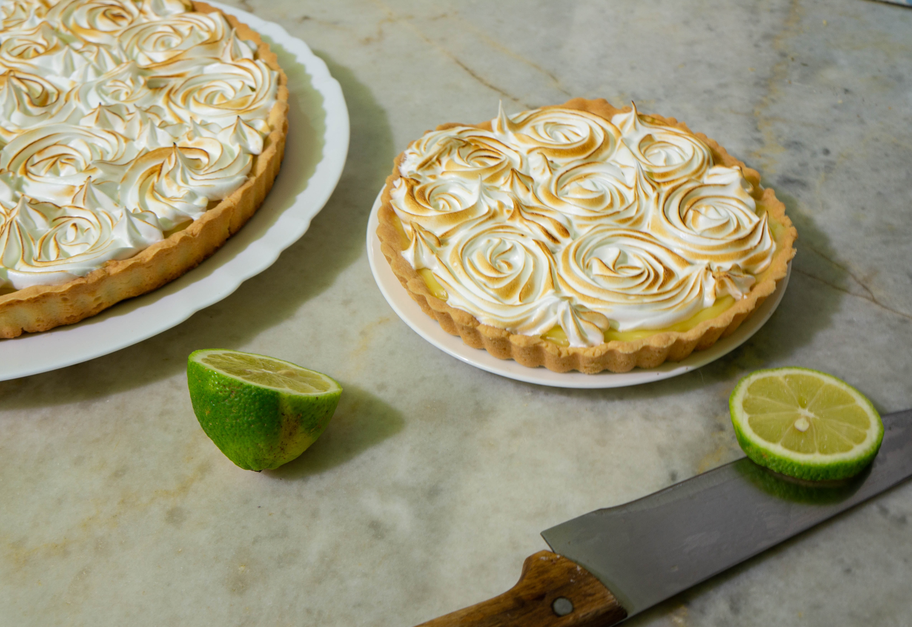

Key Lime Pie

Description
An easy and tasteful recipe of the famous Florida tart pie. This recipe is from Martha Stewart's Website.
Ingredients
- 1 1/2 cups graham-cracker crumbs
- 6 tablespoons unsalted butter, melted and cooled
- 5 tablespoons sugar
- 1/2 cup freshly squeezed key-lime juice
- 1 tablespoon grated Key lime zest, plus more for garnish
- 1 1/2 cups heavy cream, chilled
- 1 can (14 ounces) can sweetened condensed milk
- 4 large egg yolks
Directions
- Heat oven to 375 degrees. Combine graham-cracker crumbs, butter, and 3 tablespoons sugar in a medium bowl; mix well. Press into a 9-inch pie plate, and bake until lightly browned, about 12 minutes. Remove from oven, and transfer to a wire rack until completely cooled.
- Lower oven to 325 degrees. In a medium bowl, gently whisk together condensed milk, egg yolks, Key lime juice, and zest. Pour into the prepared, cooled crust.
- Return pie to oven, and bake until the center is set but still quivers when the pan is nudged, 15 to 17 minutes. Let cool completely on a wire rack.
- Shortly before serving, combine cream and remaining 2 tablespoons sugar in the bowl of an electric mixer fitted with a whisk attachment. Whisk on medium speed until soft peaks form, 2 to 3 minutes. Spoon over cooled pie; garnish with zest. Serve immediately.
Return to home